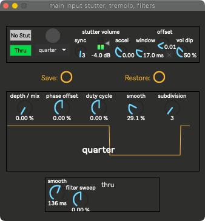

Main Stutter Tremolo & Filters¶
Six parameters here are available in the bindings. Both the stutter and tremolo’s subdivisions are attached to the binding’s subdivisions.
{kind=link}
Stutter¶
Inspired by Pioneer’s Stutter FX.
Parameters¶
| stutter: | Toggle stutter on and off. Bound to Main Input Stutter Enable (trig) |
|---|---|
| button: | Selects a random subdivision. Bound to Main Input Stutter Random Rhythm (trig) |
| vol dip: | Determines how much the stutter volume will decrease as the acceleration increases from neutral. |
| offset: | Positive offset can improve transients at the beginning of the loop by shifting them outside of the declick window. |
| window: | Prevents clicks by quickly muting the stutter at the loop point. Determines how long muting should take. |
| accel: | Slow down and speed up the stutter FX. Bound to Main Input Stutter Accel (bi) |
| stutter volume: | The volume of the stutter. |
| subdiv menu: | The rhythm of the subdivision. Attached to binding’s subdivisions. |
| sync: | Same as the subdiv menu. |
| gated or thru: | Should the input be gated by the stutter, or always pass through regardless of if the stutter is occuring? This may be hardcoded to change dynamically. Don’t worry about it. |
Tremolo¶
A simple, musical, square-wave tremolo.
Parameters¶
| depth mix: | Amount of tremolo. Bound to |
|---|---|
| duty cycle: | The fraction of one period in which the signal is active. Bound to |
{kind=link}
Filter¶
Also inspired by Pioneer, a DJ filter.
Parameters¶
| filter sweep: | Bypass at 50%. Approaching 100% is a lowpass sweep up, and approaching 0% is a highpass sweep down. The filters are an MS20-like 24 dB/oct Sallen Key filter by Surreal Machines. Bound to Main Input Filters (bi) |
|---|---|
| smooth: | Smooths the filter frequency modulation. If mapped to a joystick, lower values follow the joystick more closely, while higher values glide towards the joystick. |